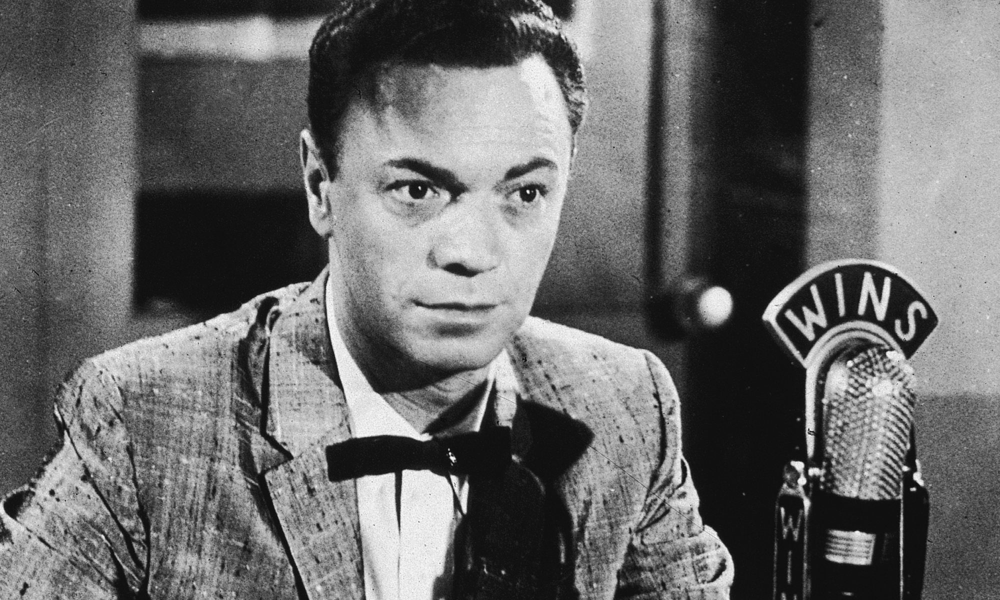
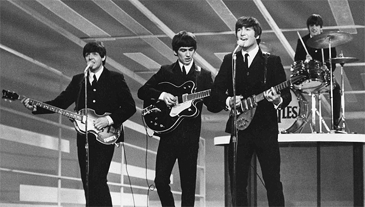
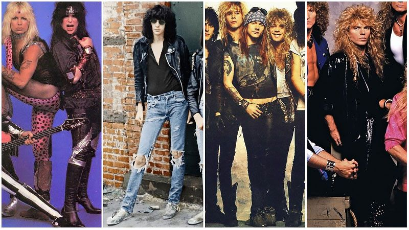

Has rock really changed that much?
Rock music has been around since the late 1940s and its history is rich and complex. The earliest versions of rock are barely recognizable as the same genre of music as rock that came out fifteen years later, let alone rock from thirty or even sixty years later. While it has changed significantly, rock is still around today and today's rock still takes a huge influence from earlier versions of rock.
The 40s and 50s
Rock started off with very structured songs that were heavily influenced by the blues. This era of rock is often referred to as 'rock and roll' which is a term that a Alan Freed, a disc jockey from the time, used to refer to the early versions of rock music. Rock and roll caught on quickly with the youth because of its controversiality in society. Rock and roll lyrics were often about topics that were considered taboo at the time, and the loud heavy sounds coupled with the 'inappropriate' dance moves. One of the most popular artists of the era, Chuck Berry, is considered to be a huge influence for the next wave of rock styles that came around in the 60s.
The 60s
Conveniently for the sake of describing it's history, rock music's evolution fits fairly well with the turn of each decade. As the 60s rolled around, bands like the Beatles and the Rolling Stones became popular. The music being produced was more heavily focuses on the themes of rebellion, drugs, and sex. Bands also became more popular than solo artists, which allowed musicians to create more cohesive albums. It's popularity at the turn of the decade and improvements in recording technology pushed rock music into the styles of the 70s.
The 70s
The 70s brought with it darker, heavier tones and more experimentation. Bands like Led Zeppelin are a good example of the darker, heavier tones heard throughout the 70s. On the other hand, heavy experimentation can be heard in bands like Pink Floyd. The music of bands like Pink Floyd often had very unique sounds. This was made possible with the improvements in recording technology, which allowed major alterations to recorded music. Pink Floyd is probably the most artistically and commercially successful bands when it came to this type of music. The other major influence for bands like this was psychedelic drugs. Many rock bands of the time did't like the direction that rock was moving. These bands referred to the psychedelic movement as 'hippie' bands and considered them to be pretentious. So, bands like the Sex Pistols and the Clash started the punk movement which was marked by loud, heavily distorted guitars and enraged lyrics and vocals.
The 80s
Major improvements in technology were allowing bands to create more synthesised music using computers and new electronic instruments. These improvements lead to a much more computerized and electronic sound than was possible in in the past. Many bands like Guns N' Roses still wanted to make rock with a heavier more guitar based sound. The other bands; however, ran with the synthetic sound and created what is often referred to as pop rock. These were bands like Simple Minds. Their music was typically fairly up beat and good dance music. The introduction of MTV also had an effect on the music. MTV brought with it the popularization of music videos, which lead up and coming bands to focus on making music they could dance to in order to produce more appealing videos.
The 90s and on
By the time the 90s came around, rock was no longer the most popular genre of music. This didn't stop musicians from continuing to make rock music. The punk movement was one of the most prominent styles of rock music. This included bands such as Green Day and Blink-182. More genres emerged in rock as well. These included grunge, indie, and alternative rock, as well as many other new variations. Rock has been evolving constantly since it grew out of older genres of music, and it will continue to expand and diversify as more musicians explore this genre of music. It is reasonable to expect that rock will never truly die out all the way.